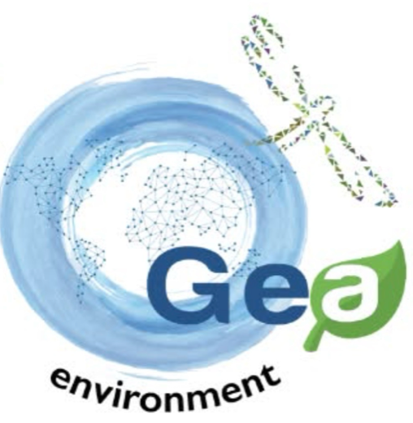

Gestión ambiental para empresas e industrias
Manejo responsable de residuos y cumplimiento ambiental para su operación
En GEA Environment ayudamos a empresas e industrias a cumplir con las regulaciones ambientales y a operar con procesos más seguros, eficientes y responsables.
Quiénes somos
Soluciones integrales para el manejo de residuos
GEA Environment ofrece servicios especializados en gestión ambiental. Nuestra experiencia abarca el manejo de residuos peligrosos, residuos biológico-infecciosos (RPBI) y residuos de manejo especial, además de consultoría ambiental, estudios técnicos y servicios industriales complementarios.
Adaptamos cada solución a las necesidades específicas de cada cliente, con un enfoque preventivo y operativo que ayuda a reducir riesgos ambientales, optimizar procesos internos y asegurar el cumplimiento de la normativa vigente.
Servicios
Servicios ambientales especializados
Soluciones orientadas a la correcta administración de residuos industriales y comerciales, a la protección del entorno y al cumplimiento regulatorio de cada empresa.
-
Manejo de residuos peligrosos
Gestión de residuos industriales como aceites, solventes, pinturas, pilas, envases contaminados y materiales impregnados, bajo procedimientos seguros.
-
Manejo de RPBI
Soluciones para residuos peligrosos biológico-infecciosos con protocolos adecuados para la protección sanitaria y ambiental.
-
Residuos de manejo especial
Recolección y gestión de residuos de procesos industriales, reciclables, electrónicos, de construcción, chatarra y sólidos no peligrosos.
-
Capacitación y asesoría ambiental
Programas de capacitación y consultoría para fortalecer la cultura ambiental y mejorar los procesos ambientales de su empresa.
-
Trámites y servicios complementarios
Apoyo en la gestión de documentación y requisitos ambientales: COA, licencias, estudios técnicos, auditorías y programas de cumplimiento.
-
¿No sabe qué servicio necesita?
Describa su situación y el tipo de residuos o requisito que debe atender. Le orientaremos sobre la opción adecuada.
Contar mi caso
Enfoque de trabajo
Preventivo y operativo
Trabajamos para que la gestión ambiental de su empresa no sea solo una obligación, sino un proceso ordenado y bajo control.
-
Reducir riesgos ambientales
Identificar y atender a tiempo los puntos de riesgo en el manejo de residuos y en las actividades con impacto ambiental.
-
Optimizar procesos internos
Ordenar la forma en que su empresa separa, almacena y entrega sus residuos, y mejorar sus procedimientos ambientales.
-
Asegurar el cumplimiento normativo
Apoyar a su organización para cumplir con la normativa ambiental vigente y contar con la documentación que su operación requiere.
Etapas que comprenden nuestros servicios de manejo de residuos
- 1Recolección
- 2Transporte
- 3Tratamiento
- 4Disposición final
Información proporcionada por GEA. El alcance de cada etapa puede variar según el tipo de residuo y se confirma en la propuesta de servicio.
Compromiso ambiental y operación segura
Capacidad para un manejo seguro y controlado
Contamos con los elementos necesarios para manejar los residuos de forma segura y controlada durante cada etapa del proceso.
-
Personal capacitado
Equipo preparado para el manejo seguro de residuos.
-
Unidades especializadas
Unidades equipadas con sistemas de rastreo satelital, plataformas hidráulicas y equipos de contención antiderrames.
-
Instalaciones y centros de operación
Infraestructura que permite brindar atención oportuna a distintos sectores industriales. Cobertura: [COBERTURA POR CONFIRMAR]
-
Apego a la normativa
Operación conforme a las disposiciones de las autoridades ambientales y las Normas Oficiales Mexicanas (NOM) para el manejo, transporte, acopio y disposición final de residuos.
Autorizaciones y registros ambientales: [NÚMEROS DE AUTORIZACIÓN POR CONFIRMAR]

Nuestra identidad
GEA significa madre tierra
Nuestro nombre y nuestra imagen representan los elementos que buscamos proteger en cada servicio.
- Círculo azul
- Agua
- Hoja verde
- Flora
- Libélula
- Fauna
- Mapa
- Tierra
- GEA
- Madre tierra
- Environment
- Ambiente
¿Necesita gestionar residuos o cumplir un requisito ambiental?
Cuéntenos qué residuos genera su empresa o qué trámite necesita. Con esa información, el equipo de GEA podrá revisar su caso y preparar una propuesta.
[TELÉFONO POR CONFIRMAR]